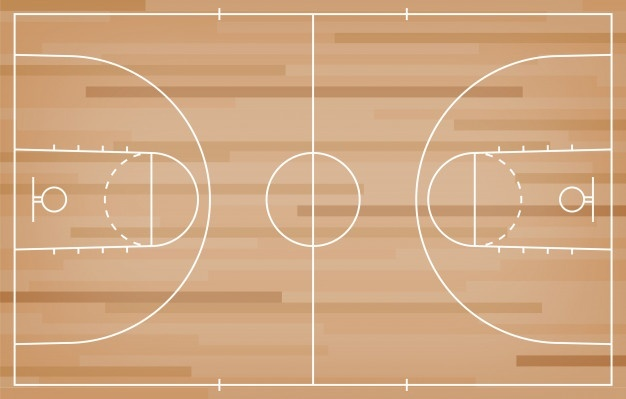

Principais Regras
1. Quadra de jogo
O jogo é realizado em uma quadra (própria) com as dimensões (oficiais) de 28 metros de comprimento por 15 metros de largura. Diferente da quadra de futebol ou vôlei, por exemplo, as linhas que delimitam a quadra são consideradas fora da área de jogo.
As cestas são situadas no centro, perto da extremidade do fundo no campo de defesa de cada uma das equipes, a uma altura de 3,05 metros.
 Quadra de basquete
2. Tempo de partida
Cada partida é disputada em 4 quartos de 10 minutos cada. Intervalos de 2 minutos após o primeiro e terceiro quartos e de 15 minutos no final do segundo quarto (final do primeiro tempo de jogo).
No caso de empate ao final da partida, são realizadas prorrogações de 5 minutos até que haja o desempate.
3. Pontuação
As cestas podem valer 3, 2 ou 1 ponto:
- 3 pontos - fora da linha dos três pontos
- 2 pontos - na parte interna da linha de três pontos (incluindo a linha)
- 1 ponto - lance livre (cobrança de penalidade) na área demarcada.
4. Controle de bola
O basquete é jogado com as mãos e cada jogador a partir do controle da bola pode passar, arremessar, quicar, rolar, tapear ou driblar.
O drible consiste no controle da bola, quicando-a com uma das mãos, de cada vez. O jogador pode dar apenas um passo por quique da bola. O drible acaba quando o jogador toca com ambas as mãos simultaneamente a bola.
São infrações:
- se o jogador movimentar os dois pés, estando em posse da bola - andar
- toque a bola com as duas mão e volte a quicá-la - dois dribles.
Cada equipe, após o controle da bola, possui 24 segundos de posse de bola para arremessá-la à cesta adversária. Desses 24 segundos, apenas 8 segundos podem ser executados no campo de defesa.
A equipe não pode regressar com a bola ao campo de defesa após ter cruzado a linha do meio da quadra.
5. Faltas
No basquete existem diferentes tipos de falta, todos eles devem ser considerados pela arbitragem. Os tipos de falta são:
- faltas pessoais: quando há um contato ilegal entre os atletas;
- faltas técnicas: são relativas ao comportamento do jogador, quando este atrapalha o desenvolvimento da partida sem haver contato físico com o adversário;
- faltas antidesportivas: ocorrem quando o contato ocorre de forma alheia aos padrões do jogo
- faltas desqualificantes: quando há algum ato de violência praticado por um atleta ou no caso de briga entre dois ou mais atletas.
Durante a partida, cada jogador possui um limite de 5 faltas pessoais. Após o cometimento da quinta falta, o jogador deve ser excluído da partida.
Cada equipe também possui um limite de 5 faltas (faltas coletivas/faltas de equipe) por quarto de jogo. A partir da quinta falta coletiva em diante, a equipe que sofre a falta tem direito à execução de dois lances livres.
Lances livres
Os lances livres são arremessos sem marcação a partir de uma área delimitada para sua cobrança.
Eles ocorrem quando um jogador recebe um contato no momento do arremesso ou após esgotado o limite de faltas coletivas de uma equipe.
Os lances livres devem ser cobrados pelo jogador que sofreu a falta. No caso de lesão ou abandono da partida, seu substituto direto deve realizar os arremessos.
6. Substituições
No basquete, cada equipe pode realizar um número indeterminado de substituições. As substituições podem ocorrer a qualquer momento da partida, seja com a bola em jogo, desde que sejam feitas dentro da área delimitada, ou nos momentos de parada.